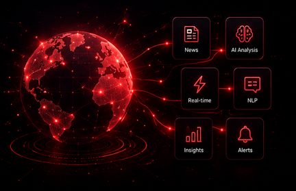
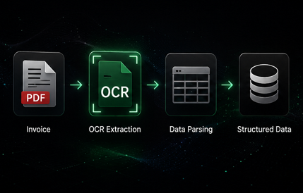
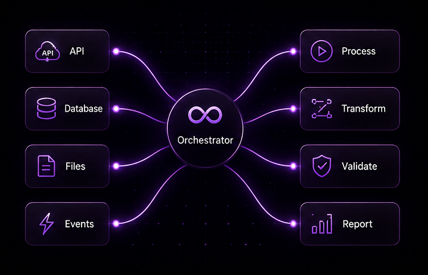

AI-Powered News Intelligence Platform
Scraped & processed news from 1000+ PR & media sources. AI classification and structured data pipelines.
PythonPlaywrightn8nOpenAI
Python developer specializing in web scraping, data pipelines, AI automation, and backend systems that drive real impact.

Scraped & processed news from 1000+ PR & media sources. AI classification and structured data pipelines.
Automated campaign data reconciliation with SQL & Python. Reduced manual validation effort by 70%.

Extracted data from invoices using OCR, applied 11+ business rules & automated validation workflows.

Built custom n8n workflows for data collection, transformation & delivery across multiple clients.
I'm a Python developer who loves solving real-world problems through automation and intelligent systems. From scraping millions of data points to building AI-powered workflows — I build systems that create measurable impact.
Mayur Ram
Open to exciting opportunities and collaborations.